Reimbursement Tracking System — Technical Documentation
Data Modeling
The Reimbursement Tracking System (RTS) uses a structured relational schema built on PostgreSQL to ensure data integrity, consistency, and relational linkage between entities.
Why Structured Database
- Financial and transactional data require accuracy, consistency, and referential integrity.
- PostgreSQL enforces ACID compliance, foreign keys, and data constraints, critical for reimbursement and audit workflows.
- Complex queries (filtering requests, aggregating expenses, generating reports) are efficiently handled using SQL joins.
Schema Diagram

Entity Descriptions
1. User: Represents both employees and admins. Each user has unique credentials and a defined role that controls access within the system. The emp_id field allows mapping users to internal company records.
2. Request: Stores details of each reimbursement request. Every request is linked to one user and can include multiple expense entries. Requests move through different statuses — draft, submitted, approved, or rejected — based on workflow actions.
3. Expenses: Contains detailed records of individual expenses under a request. Each expense entry includes its title, category, description, amount.
Architectural Overview
The system is composed of three primary layers:
1. Frontend: A lightweight web interface built with HTML, CSS, and JavaScript. Communicates with the backend via REST APIs. Implements form handling, JWT-based session management, and responsive design.
2. Backend: Developed using Django REST Framework (DRF). Handles authentication, authorization, business logic, and CRUD operations for all entities (Users, Requests, Expenses).
3. Database: PostgreSQL serves as the structured data store ensuring relational integrity, transactional safety, and auditability.
Architecture Diagram

Data Flow
The Reimbursement Tracking System (RTS) follows a centralized, role-driven data flow connecting the frontend, backend, and database layers. All interactions occur through authenticated REST API endpoints secured with JWT tokens.
Overview
The system consists of two user types — Employee and Admin — both interacting with the same backend and database through different process flows:
- Employee: creates, edits, and submits reimbursement requests along with related expenses.
- Admin: reviews submitted requests, checks expense details, and approves or rejects them.
- Database: stores all user, request, and expense data while maintaining referential integrity.
Data Flow Diagram

Flow Description
Authentication (JWT)
- Both Employee and Admin log in with credentials.
- The backend validates users against the users table.
- If valid, it generates a JWT token (Access + Refresh).
- All further requests include this token for secure authorization.
Employee Operations
- Employee creates or edits a reimbursement request (stored in requests table) while its status is Draft.
- Employee can add, view, or modify expenses under that request (stored in expenses table).
- When ready, the employee submits the request, changing its status to Submitted in the database.
- Once submitted, the employee can only view the request and related expenses — editing is disabled.
Admin Operations
- Admin views all submitted requests.
- Admin opens a request to view associated expenses.
- Admin verifies the claim and updates its status to either Approved or Rejected.
- This status update is reflected in the requests table and visible to the employee.
Data Flow Summary
| Step | Actor | Process | Database Interaction |
|---|---|---|---|
| 1 | Employee / Admin | Login & Authentication | Validate user and issue JWT token |
| 2 | Employee | Create / Edit / Delete Request | Insert or update record in requests |
| 3 | Employee | Add / Edit / View Expenses | Insert or update record in expenses |
| 4 | Employee | Submit Request | Update requests.status = 'submitted' |
| 5 | Admin | View Submitted Requests | Query requests.status = 'submitted' |
| 6 | Admin | View Expenses | Query linked expenses for a request |
| 7 | Admin | Approve / Reject Request | Update requests.status accordingly |
Authentication
The Reimbursement Tracking System (RTS) uses JWT (JSON Web Token)–based authentication implemented through Django REST Framework Simple JWT.
This ensures stateless, secure communication between the frontend and backend, with short-lived access tokens and refresh tokens for session continuity.
Authentication Process Overview
- The user (either Employee or Admin) enters their username and password in the login form.
- The frontend sends these credentials to the backend authentication endpoint (
/api/auth/login/). - The backend validates the credentials against the
userstable. - If valid, the backend generates both an Access Token and a Refresh Token using Simple JWT.
- These tokens are returned to the frontend, which stores them securely (typically in
localStorage). - For subsequent API requests, the frontend includes the
Authorization: Bearer <access_token>header. - If the access token expires, the frontend uses the refresh token to obtain a new one.
- If credentials are invalid, the backend returns an appropriate error message (HTTP 401 Unauthorized).
Token Configuration (Example)
SIMPLE_JWT = {
"ACCESS_TOKEN_LIFETIME": timedelta(minutes=5),
"REFRESH_TOKEN_LIFETIME": timedelta(hours=1),
"ROTATE_REFRESH_TOKENS": False,
"BLACKLIST_AFTER_ROTATION": True,
"UPDATE_LAST_LOGIN": True,
}
Authorization
After authentication, the Reimbursement Tracking System (RTS) enforces role-based authorization to control access to system resources.
Every authenticated user is assigned a role (admin or employee), which defines their permissions and scope of operations within the application.
Authorization Overview
Authorization ensures that:
- Employees can only access and manage their own reimbursement data.
- Admins can view and manage all reimbursement requests except those still in draft status.
- Only Admins can add new users to the system.
Roles and Access Levels
| Role | Description | Access Scope |
|---|---|---|
| Admin | Administrative user with elevated privileges for user and request management. | Can view all requests that are not in draft status (submitted, approved, rejected) and can add new users. |
| Employee | Regular user who creates and manages their own reimbursement requests and expenses. | Can view all their requests, add expenses, edit draft requests, and submit requests for approval. |
Permissions Matrix
| Action | Employee | Admin |
|---|---|---|
| Add new user | No | Yes |
| View users | No | Yes |
| Create reimbursement request | Yes | No |
| Edit draft request | Yes (own only) | No |
| Submit request | Yes (own only) | No |
| View requests | Yes (all own requests) | Yes (all except drafts) |
| Approve / reject request | No | Yes |
| Add expenses to a request | Yes (own, while draft) | No |
| Edit / delete expenses | Yes (own, while draft) | No |
| View expenses | Yes (own) | Yes (all linked to viewable requests) |
Implementation in Django REST Framework
Authorization is implemented through custom permission classes combined with JWT authentication.
Default Authentication and Permissions
REST_FRAMEWORK = {
'DEFAULT_AUTHENTICATION_CLASSES': (
'rest_framework_simplejwt.authentication.JWTAuthentication',
),
'DEFAULT_PERMISSION_CLASSES': (
'rest_framework.permissions.IsAuthenticated',
),
}
Security and Access Control Summary
- Role-based access control (RBAC): Clearly separates administrative privileges from employee actions.
- Backend-enforced permissions: Prevent unauthorized access regardless of client behavior.
- Data isolation: Employees cannot view or modify other users’ data.
- JWT token validation: Ensures all API interactions are authenticated and role-checked before execution.